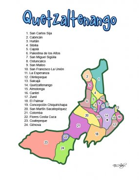

Division politica
Quetzaltenango es uno de los veintidós departamentos que conforman Guatemala, su cabecera es Quetzaltenango. El departamento de Quetzaltenango tiene 1.953 km², equivalentes al 1,8% del territorio nacional. A nivel departamental el 60,57% de la población es indígena, porcentaje superior al observado a nivel nacional (41,9%); predomina el grupo étnico k'iche' y mam. Se habla español, idioma oficial, pero también se habla k'iche' y mam. Las ciudades de Quetzaltenango y Salcajá se ubican dentro de las 20 ciudades más importantes de Guatemala.
Clima Templado, Frío
Población (2020)
• Total 894 402 hab.
• Densidad 459,5 hab/km²
